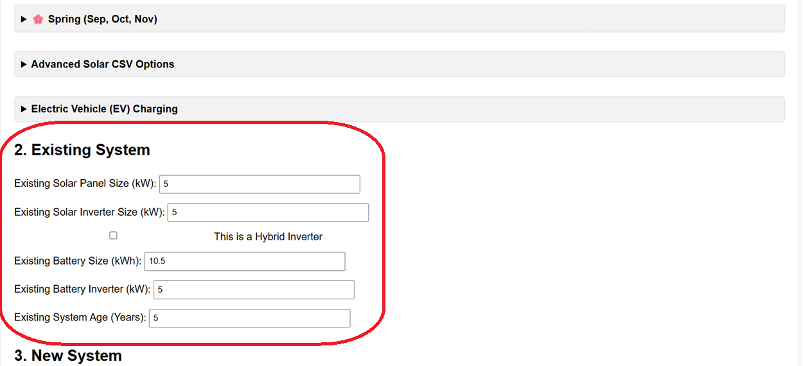
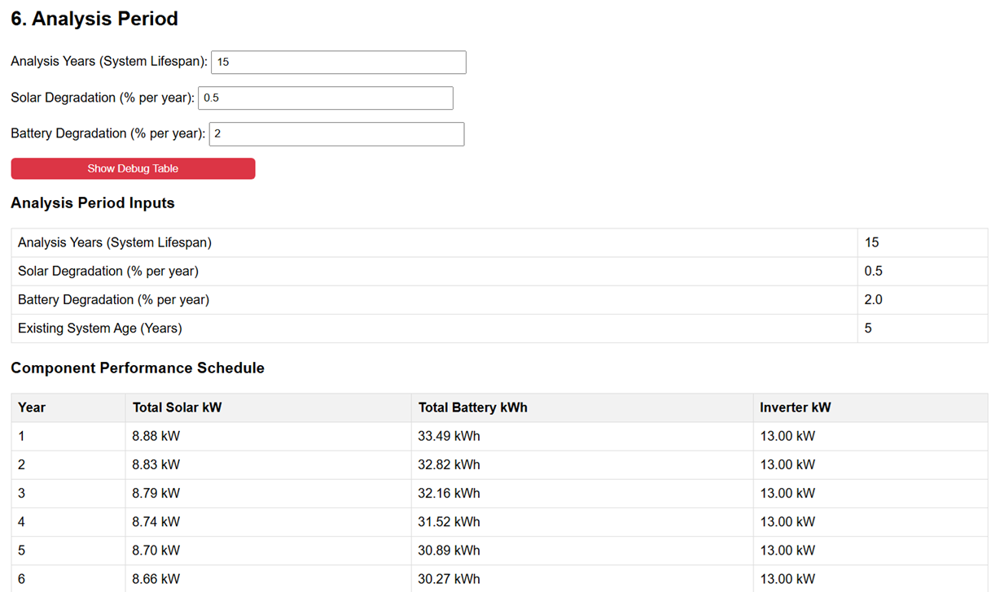

This section of the analyser is where you tell it about any solar panels, inverters, or batteries you *already* have installed. If you don't have anything yet, you can leave these fields as 0 (or check the "No existing solar system" box in Section 1).

Enter the total kilowatt (kWp) capacity of your current solar panels.
Enter the maximum power output (kW) of your current solar inverter. For hybrid inverters, enter the total rating.
Check this box if your existing solar panels and battery (if any) are managed by a single hybrid inverter unit. Leave unchecked if you have separate inverters for solar and battery (or no battery).
Enter the total usable energy capacity (kWh) of your current battery, if you have one.
Only enter a value here if you have a separate, dedicated inverter just for your battery (an AC-Coupled battery). Leave as 0 if you have a hybrid system or no battery.
This is a crucial field!
Enter the current age of your system in whole years.
How it affects calculations:
1 * (1 - 0.02)^5 ≈ 0.90).